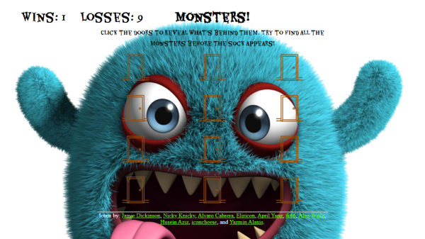
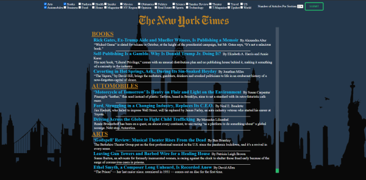
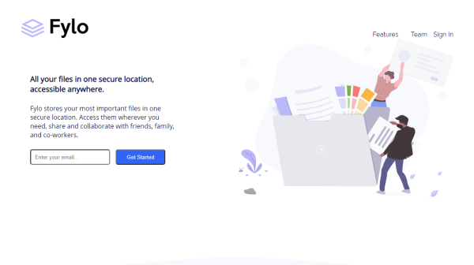

This weather app showcases pulling and rendering weather API data. A switch statement is then run that sets the background image to reflect the weather description.

This project is a guessing game (and win/loss tracker) made with Javascript that hides a shuffled array of monster images (and 1 sock) behind a grid of "door" buttons. When a button is clicked, the monster/sock is revealed. If you find all of the monsters before the sock you win!

This is a randomized rock paper scissors game built with JavaScript.

This project demonstrates pulling the New York Times news articles API. The top three articles of 3 different (interchangeable in JS variable) topics are rendered to the page.

I helped create a mock website project using HTML and CSS with two other developers to showcase version control on github.

This silly website that pulls and renders random dog images.

Weather App that uses a promise/fetch within another promise/fetch to get user location (in first promise) and then pull weather API data based on the former's result. Additionally, developers may pass in selectors in a plugin at the bottom of the script to allow them to easily modify things like the weather description or Fahrenheit/Celsius.